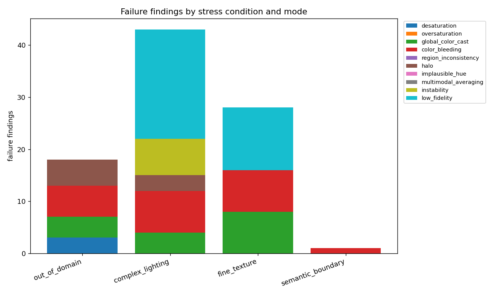
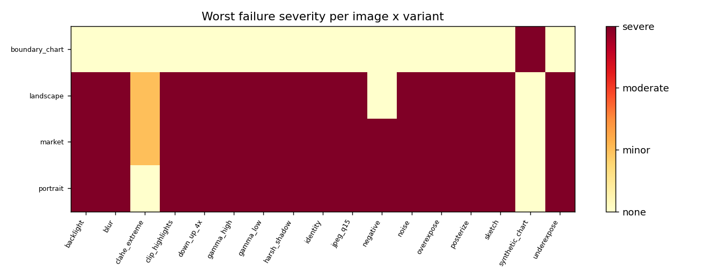
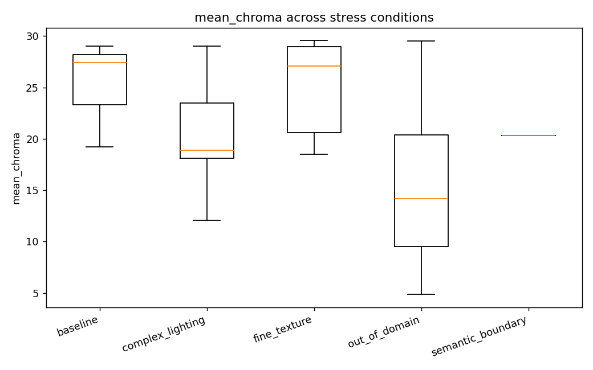
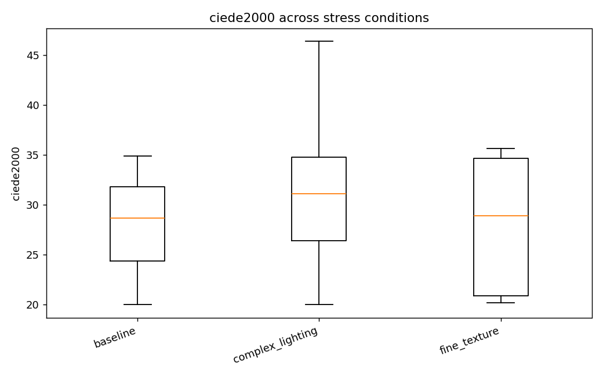
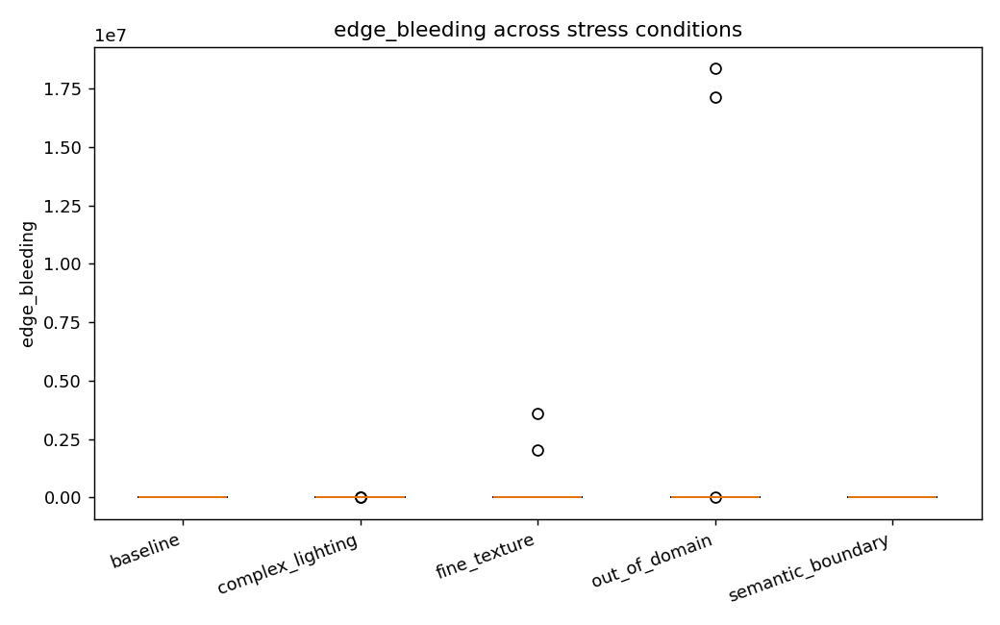
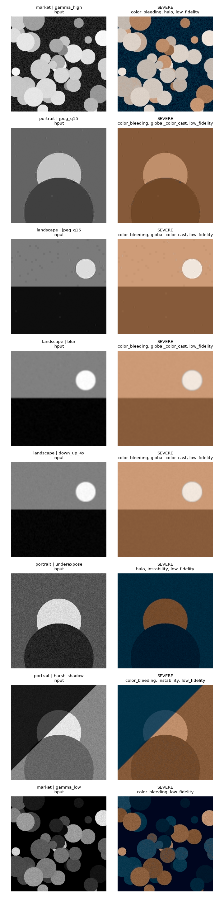

Failure Analysis Report — MockColorizer (smoke test)
1. Overview
• Total (image, stress-variant) evaluations: **49**
• Evaluations exhibiting at least one failure: **47 (96%)**
Failure rate by stress condition
| Stress condition | Evaluated | With failure | Rate |
| baseline | 3 | 3 | 100% |
| complex_lighting | 21 | 21 | 100% |
| fine_texture | 12 | 12 | 100% |
| out_of_domain | 12 | 10 | 83% |
| semantic_boundary | 1 | 1 | 100% |
Most common failure modes
| Failure mode | Count |
| low_fidelity | 36 |
| color_bleeding | 24 |
| global_color_cast | 18 |
| halo | 8 |
| instability | 7 |
| desaturation | 3 |
2. Figures
**Failures by stress condition**

**Severity heatmap**

**Distribution of mean_chroma**

**Distribution of ciede2000**

**Distribution of edge_bleeding**

3. Taxonomy — where and how the model fails
out_of_domain
• Expected failure modes: desaturation, global_color_cast, implausible_hue, multimodal_averaging
• Observed failure modes: color_bleeding (6), halo (5), global_color_cast (4), desaturation (3)
• **color_bleeding** — Colour leaks across object boundaries so that an object's hue spills onto its neighbour. Measured as chroma variation concentrated on luminance edges.
• **halo** — A thin ring of anomalous chroma hugs high-contrast edges, a classic artefact of upsampling a low-resolution ab prediction.
• **global_color_cast** — A single hue dominates the whole frame (e.g. everything tinted teal), usually triggered by an unusual global luminance statistic.
complex_lighting
• Expected failure modes: global_color_cast, desaturation, instability, low_fidelity
• Observed failure modes: low_fidelity (21), color_bleeding (8), instability (7), global_color_cast (4), halo (3)
• **low_fidelity** — With a colour ground-truth available, the predicted colours are far from the true colours (high CIEDE2000 / ab error).
• **color_bleeding** — Colour leaks across object boundaries so that an object's hue spills onto its neighbour. Measured as chroma variation concentrated on luminance edges.
• **instability** — A small, colour-preserving change to the input (mild lighting shift, light blur) produces a disproportionately large change in the output colours.
fine_texture
• Expected failure modes: region_inconsistency, halo, instability
• Observed failure modes: low_fidelity (12), global_color_cast (8), color_bleeding (8)
• **low_fidelity** — With a colour ground-truth available, the predicted colours are far from the true colours (high CIEDE2000 / ab error).
• **global_color_cast** — A single hue dominates the whole frame (e.g. everything tinted teal), usually triggered by an unusual global luminance statistic.
• **color_bleeding** — Colour leaks across object boundaries so that an object's hue spills onto its neighbour. Measured as chroma variation concentrated on luminance edges.
semantic_boundary
• Expected failure modes: color_bleeding, halo, region_inconsistency
• Observed failure modes: color_bleeding (1)
• **color_bleeding** — Colour leaks across object boundaries so that an object's hue spills onto its neighbour. Measured as chroma variation concentrated on luminance edges.
4. Qualitative examples (worst cases)

• `market` / `gamma_high` — **severe** — color_bleeding, halo, low_fidelity
• `portrait` / `jpeg_q15` — **severe** — color_bleeding, global_color_cast, low_fidelity
• `landscape` / `jpeg_q15` — **severe** — color_bleeding, global_color_cast, low_fidelity
• `landscape` / `blur` — **severe** — color_bleeding, global_color_cast, low_fidelity
• `landscape` / `down_up_4x` — **severe** — color_bleeding, global_color_cast, low_fidelity
• `portrait` / `underexpose` — **severe** — halo, instability, low_fidelity
• `portrait` / `harsh_shadow` — **severe** — color_bleeding, instability, low_fidelity
• `market` / `gamma_low` — **severe** — color_bleeding, low_fidelity
5. Method notes
• Ground-truth is obtained by converting colour photos to grayscale, colorizing, and comparing to the original. Reference metrics (PSNR, SSIM, CIEDE2000, ab-MSE) are only applied to scene-colour-preserving variants (lighting, texture); out-of-domain variants use no-reference and stability metrics only.
• Severity is graded relative to detection thresholds (`configs/default.yaml`); tune these to your dataset before drawing hard conclusions.
• The synthetic boundary chart isolates colour-bleeding and halo behaviour on hard luminance edges.